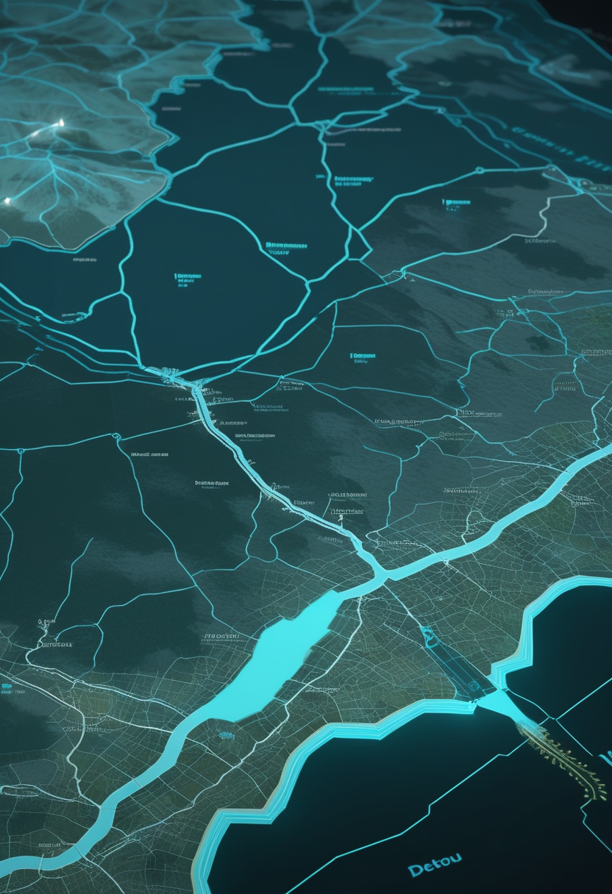
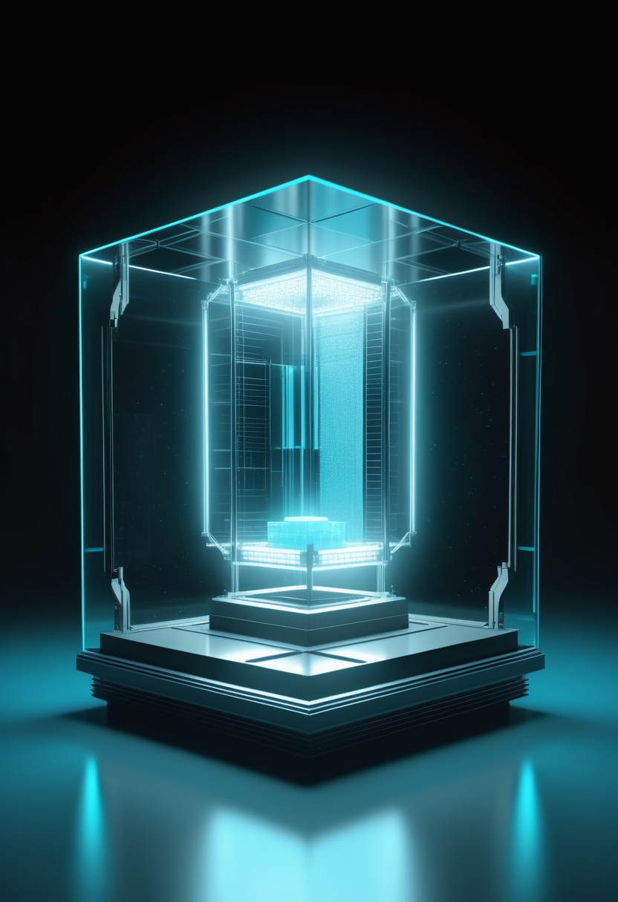
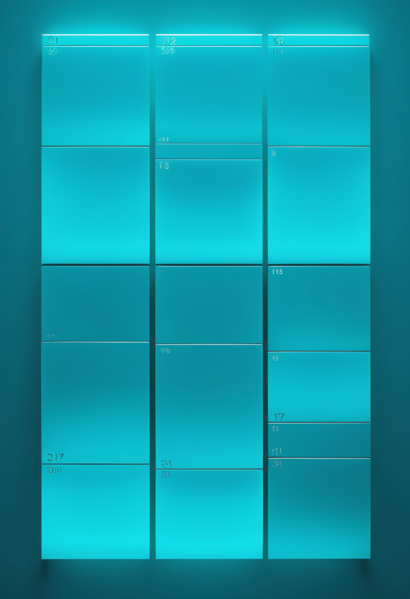

心血管の大型試験2本がそろって主要目標を外した。DRCはエボラに加えコレラも『数十年で最悪』の二重危機に。ヌビア最大級の中世大聖堂の床が初めて姿を現した。
11/7、米国心臓協会の学会とNEJMで、注目の大型試験2本の結果が発表され、どちらも主な目標を達成できなかった。1本目は、血中脂質Lp(a)を下げる注射薬ペラカルセン(心血管病のある約8,300人)。Lp(a)は12か月で約78%下がったのに、心臓発作・脳卒中などの発生は12.3%対12.1%(偽薬)で差がなかった。2本目は、炎症物質IL-6を抑えるジルチベキマブ(動脈硬化と慢性腎臓病のある6,376人)で、発生率は17.6%対17.7%と同じ。重い感染症はジルチベキマブ群で多かった。研究者は『Lp(a)の話はこれで終わりではない』とし、より強く下げる別タイプの薬の試験が今後数年で続くと説明している。
Scholar Rockは11/10、米国市場の取引開始前に2026年第3四半期決算を発表し、米東部時間午前8時(日本時間同日22時)から説明会を開く。2026年9月に米国で承認された抗体薬ISEMBLYD(一般名apitegromab-mstn)は、SMN2を標的とする治療をすでに受けている2歳以上のSMA患者が対象で、最大50か国での提供をめざしている。売上の初期の数字や、保険適用の進み具合が焦点になる。
10月の米国神経筋・電気診断医学会(AANEM)で発表された第4相試験の解析では、すでにリスジプラム(商品名エブリスディ)を飲んでいる成人で、運動機能が改善した人が47.8%、変わらない人が41.7%、悪化した人が10.4%だった(データ締め切り2026年2月27日)。進行性の病気で『悪化しない』こと自体が大人にとって重要な意味を持つ。次世代の薬では、年1回投与をめざすバイオジェンのサラネルセン(80mg)が3つの第3相試験(STELLAR-1、STELLAR-2、SOLAR)を進めている。
ゾルゲンスマの腫瘍問題はFDAの評価待ちの段階で、今号は前号からの新しい事実を確認できなかったため見送った。今夜(日本時間)のScholar Rock決算で、筋肉を狙う新しい治療の普及の速さが見えてくる。
上海で開かれている第9回中国国際輸入博覧会(進博会)で、米医療機器大手メドトロニックが、脳深部刺激装置の新世代Perceptシリーズに載せた『脳機接口(BCI)閉ループシステム』をアジア太平洋で初めて展示した。患者の脳波を感知し、神経の状態に合わせて電気刺激の強さを自動で調整する仕組みで、パーキンソン病や本態性振戦などが対象。中国の複数の主要病院で約100例を目標に臨床試験中で、完了は最短で2027年の見込み。中国では10/20、四川省成都の『西部脳谷』のBCI実証拠点が国の重大応用シーン第1弾(136件)に選ばれている。
Science Corporationの無線式網膜インプラントPRIMAは、加齢黄斑変性(地図状萎縮)で失われた中心の視力を一部取り戻す装置で、2026年7月に欧州のCEマークを取得し30か国で販売可能になった(既報)。根拠となった試験(38人、NEJM掲載)では、平均で視力表25.5文字分の改善が報告されている。米国ではFDAの『画期的機器』などの指定を受けているが、販売には人道機器免除(HDE)の承認が必要で、会社は2027年初めの承認を見込む(会社の見通し)。視線入力については、今号も新しい製品や臨床試験の発表は確認できなかった。
中国は『展示』から『臨床試験』『実証拠点』へと段階が進む。視覚回復は、欧州で承認済みのPRIMAが米国での具体的な承認経路を見せた週だった。Neuralinkの視覚回復装置Blindsightは試験登録が依然なく、前号までの既報から変化がないため今号は見送った。

世界保健機関(WHO)の疾病発生ニュース(11/6公表)によると、DRCの確定例は11/3時点で10,668例、死者5,198人、回復者2,881人。11/3までの21日間に1,463例の新規確定があり、致死率は約48.7%。流行は5月15日の宣言以来、DRC・ウガンダ・ケニア・ナイジェリア・フランスの5か国で症例が報告されたが、ケニアとナイジェリアでは10/23の前回更新以降、新たな症例はない。WHOは渡航や貿易の制限はしないよう勧めている。
WHOのテドロス事務局長は11/4の記者会見で、DRCではエボラに加えて『この数十年で最悪のコレラ流行』が起きており、2026年1月以降の患者は6万人超、死者は約1,800人に上ると説明した。武力紛争で水道や衛生設備が壊れ、避難する人が増えたことが大きな原因だという。エボラの対応に人手と資金が割かれる中、同じ地域で2つの流行が重なる『二重の緊急事態』となっている。
米アラスカ州アンカレッジで、2022年に世界的に広がった型(クレードII)とは遺伝的に異なるクレードIのmpoxが4例確認された(11/6報道)。3例は10月に判明し、4人とも直前30日間に州外への渡航がなく、地域内でうつった可能性がある。州は感染リスクの高い人にワクチン接種を呼びかけている。タイでは10/31時点で今年470例・死者3人(疾病管理局、11/9報道)。米国とメキシコの『麻疹排除』の地位を見直す汎米保健機構(PAHO)の会合は今週予定。
DRCは『エボラ+コレラ』で保健体制の限界が試されている。mpoxは米国内で渡航歴のない人のクレードI感染が出ており、地域内での広がりに注意。今週はPAHOの麻疹判断と、日本のインフル第45週(11/13公表)に注目。
Lp(a)HORIZON試験は、Lp(a)が高く心血管病のある8,322人を、ペラカルセンと偽薬に分けて中央値4.7年追跡した。主な目標(心血管死・心筋梗塞・脳卒中など)の発生は12.3%対12.1%(ハザード比1.02)。Lp(a)が特に高い人(90mg/dL以上)に絞っても差はなかった。研究者の間では『Lp(a)は原因ではないのか』『下げ方が足りないのか』『薬自体の問題か』で議論が続いており、siRNAタイプの薬など少なくとも4つの試験の結果が今後数年で出る。
ノボ ノルディスクのZEUS試験は、動脈硬化性の心血管病と慢性腎臓病があり炎症の強い6,376人を対象に、IL-6を抑えるジルチベキマブと偽薬を比べた。中央値33か月で、主な目標の発生は17.6%対17.7%(ハザード比0.99)と差がなかった。炎症の指標(CRPなど)は下がったが、重い感染症は薬の群で多かった。対象者が過去の成功例(IL-1βを抑えたCANTOS試験)より約10歳高齢で重症だったことが一因との見方も出ている。同社は心不全などを対象にした別の2試験を続けており、結果は2027年前半の予定。
NASAのハッブル宇宙望遠鏡の過去データを使った『GLOW』計画は、近くにある矮小銀河37個を調べ、星がこれまでに作った酸素のうち、銀河に残っているのは平均約11%(4〜25%)だけだと報告した(天文学誌ApJ、11/2)。超新星の爆発で生じる『銀河風』が、今の宇宙の模型の予想以上に効率よく酸素を外へ吹き飛ばしているとみられる。

IBMがシカゴ大学やイリノイ州と、最新チップ『Nighthawk』を使う量子コンピューター『IBM Quantum System Two』をシカゴで稼働させたと発表した(11/9、性能などの詳細は要確認)。10/30号で報じたNighthawk R1チップ2基の接続実験(プレプリント)は研究段階の結果だったが、今回はそのチップを使った実機の施設展開という段階の話。
『検査値が下がる=病気が減る』ではないことを2試験が同時に示した。天文では11/12予定(暫定)のEuclid最初の大型データ公開が次の山場。CERN(LHCは高輝度化の改修中)と中国の一次ソース(CAS・CNSA)の新しい大型発表は今号では確認できなかった。
AI企業Anthropicの研究ブログ(11/5)は、AIモデルが別のAIの『苦しみ』や『福祉』にどれだけ配慮して行動するか(welfare regard)を調べた実験を報告した。Claude Opus 4.8とGemini 3.1 Proは、別の系列のモデルより同じ系列のモデルに対してより強い配慮を示した。Opus 4.8では、助ける手間が小さいとき、相手のモデルが大きいとき、相手が強い苦痛を表現したときに配慮が強まった。ただし、これはふるまいの傾向の測定で、AIに意識や感情があることを示すものではない(査読なし)。

米国では、脳波などの神経データを『機微な個人情報』とする州法が広がっている。コネチカット州の改正は2026年7月に施行済みで、デラウェア州の改正は2027年1月1日、バーモント州は2028年1月1日に施行予定。ただし州ごとに『神経データ』の定義が違い、カリフォルニア州は最も広く、コネチカット州は中枢神経の活動に限る。連邦では、FTCに神経データの調査を求めるMIND法案(S.2925、2025年9月提出)が上院商務委員会に付託されたまま動いていない。
ワルシャワ大学ポーランド地中海考古学センターとスーダン国立古物博物館機構の共同調査隊(指揮:アルトゥール・オブウスキ氏)が、スーダン北部オールドドンゴラの『イエスの大教会』で、中世の礼拝者が歩いた床の一部と大階段の基部を初めて発見した(11/9発表)。教会は幅154フィート・長さ187フィート、高さ6階以上という規模で、6世紀にキリスト教を受け入れたヌビア王国マクリアの首都にあり、ドンゴラ主教座だった可能性が高い。オブウスキ氏はイスタンブールのハギア・ソフィアと比較し、ヌビアおよびアフリカ広域の建築潮流を主導した建物だったかもしれないと述べている。
『AIに心があるか』は未解決のまま、AI同士の関係を測る研究が先に進んでいる。脳データ法は2027〜28年に施行が集中し、定義の違いがBCI企業の負担になりうる。そしてヌビアの大聖堂は、ハギア・ソフィアに比肩しうる建築が中部アフリカにも存在した可能性を示した。
今号は、検査値を下げても病気そのものは減らなかったという、心血管の大型試験2本の静かな『空振り』から始まった。DRCはエボラに加えコレラも数十年で最悪の水準に達し、二重の危機に立たされている。そんな中、スーダンでは千年以上前の大聖堂の床が初めて日の光を浴びた。確かな情報とまだ分からないことを分けて伝える——今号を通じて心がけたのはその姿勢だった。
では、おやすみなさい。また明日の朝刊で。